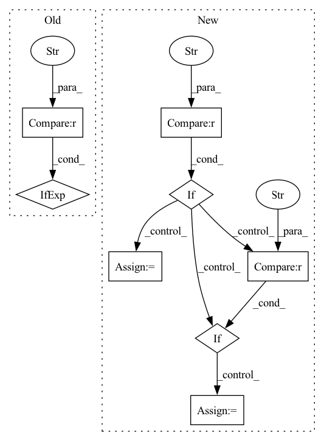

Pattern ID :4290
Before Change
self.out_dims = g_out_dims_collection[str(img_size)]
self.bottom = bottom_collection[str(img_size)]
self.num_blocks = len(self.in_dims)
self.chunk_size = self.z_dim if self.g_cond_mtd == "W/O" else z_dim // (self.num_blocks + 1)
self.hier_z_dim = self.chunk_size + self.g_shared_dim
assert self.z_dim % (self.num_blocks + 1) == 0, "z_dim should be divided by the number of blocks"
After Change
info_dim += self.MODEL.info_num_conti_c
if self.MODEL.info_type != "N/A":
if self.MODEL.g_info_injection == "concat" :
self.info_mix_linear = MODULES.g_linear(in_features=self.z_dim + info_dim, out_features=self.z_dim, bias=True)
elif self.MODEL.g_info_injection == "cBN" :
self.affine_input_dim += self.g_shared_dim
self.info_proj_linear = MODULES.g_linear(in_features=info_dim, out_features=self.g_shared_dim, bias=True)
self.linear0 = MODULES.g_linear(in_features=self.chunk_size, out_features=self.in_dims[0]*self.bottom*self.bottom, bias=True)In pattern: SUPERPATTERN
Frequency: 4
Non-data size: 8
Instances Fragment ID: 15752242
Project Name: postech-cvlab/pytorch-studiogan
Commit Name: 43b43f14632f9d0b4e18b2d081908bbc7ae2d91d
Time: 2022-01-25
Author: joonghyuk4727@gmail.com
File Name: src/models/big_resnet.py
M Class Name: Generator
N Class Name: Generator
M Method Name: __init__(14)
N Method Name: __init__(13)
M Parent Class: nn.Module
N Parent Class: nn.Module
M File Name: src/models/big_resnet.py
N File Name: src/models/big_resnet.py
M Start Line: 83
M End Line: 98
N Start Line: 47
N End Line: 97
Before Change
else:
score = _rouge_l_score(
pred if rouge_key != "Lsum" else pred_lsum,
tgt if rouge_key != "Lsum" else target_lsum,
)
result_inner[rouge_key] = score
result_avg[rouge_key].append(score)After Change
for rouge_key in rouge_keys_values:
if isinstance(rouge_key, int):
score = _rouge_n_score(pred, tgt, rouge_key)
elif rouge_key == "L" :
score = _rouge_l_score(pred, tgt)
elif rouge_key == "Lsum" :
score = _rouge_lsum_score(pred_lsum, target_lsum)
result_inner[rouge_key] = score
result_avg[rouge_key].append(score)
list_results.append(result_inner.copy()) Fragment ID: 15752243
Project Name: pytorchlightning/metrics
Commit Name: 0d563767cbbaf9dbfccc60bff4dc1be75ffa2546
Time: 2022-04-11
Author: 46073029+stancld@users.noreply.github.com
File Name: torchmetrics/functional/text/rouge.py
M Class Name: AnonimousClass
N Class Name: AnonimousClass
M Method Name: _rouge_score_update(7)
N Method Name: _rouge_score_update(7)
M Parent Class:
N Parent Class:
M File Name: torchmetrics/functional/text/rouge.py
N File Name: torchmetrics/functional/text/rouge.py
M Start Line: 237
M End Line: 262
N Start Line: 338
N End Line: 363
Before Change
def mhsa_with_multi_head_relative_position_embedding(
inputs, num_heads=4, key_dim=0, global_query=None, out_shape=None, out_weight=True, qkv_bias=False, out_bias=False, attn_dropout=0, name=None
):
channel_axis = -1 if image_data_format() == "channels_last" else 1
input_channel = inputs.shape[channel_axis]
height, width = inputs.shape[1:-1] if image_data_format() == "channels_last" else inputs.shape[2:]
After Change
blocks = height * width
// Permute for conv if given data_format not matching actual image_data_format
if image_data_format() == "channels_last" and data_format == "channels_first" :
inputs = layers.Permute([2, 3, 1])(inputs)
elif image_data_format() == "channels_first" and data_format == "channels_last":
inputs = layers.Permute([3, 1, 2])(inputs)
conv_channel_axis = -1 if image_data_format() == "channels_last" else 1
if global_query is not None: Fragment ID: 15752246
Project Name: leondgarse/keras_cv_attention_models
Commit Name: 2ba27b0132168f3590dd4b3bead9edc15a70ba7d
Time: 2023-02-11
Author: leondgarse@gmail.com
File Name: keras_cv_attention_models/coatnet/coatnet.py
M Class Name: AnonimousClass
N Class Name: AnonimousClass
M Method Name: mhsa_with_multi_head_relative_position_embedding(11)
N Method Name: mhsa_with_multi_head_relative_position_embedding(10)
M Parent Class:
N Parent Class:
M File Name: keras_cv_attention_models/coatnet/coatnet.py
N File Name: keras_cv_attention_models/coatnet/coatnet.py
M Start Line: 25
M End Line: 57
N Start Line: 32
N End Line: 74